about the classes
- 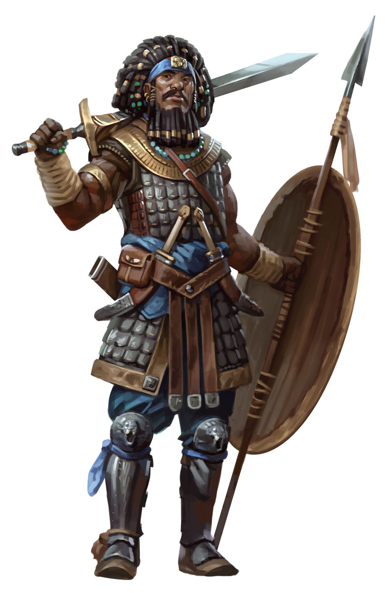
- 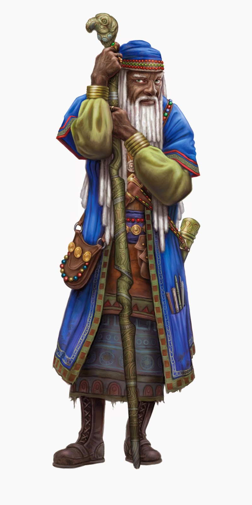
- 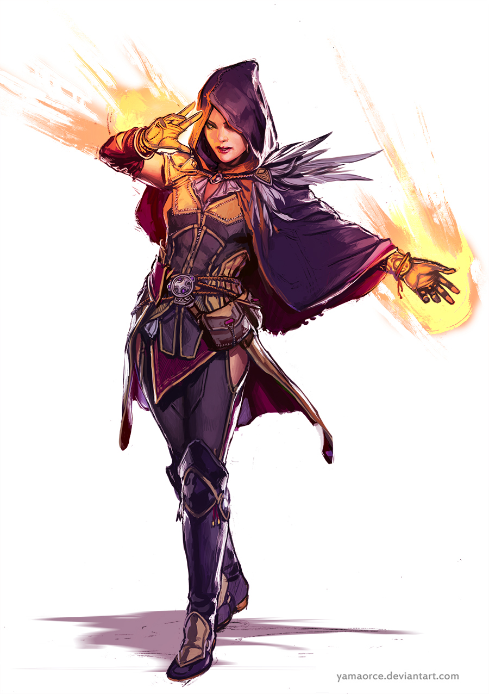
- 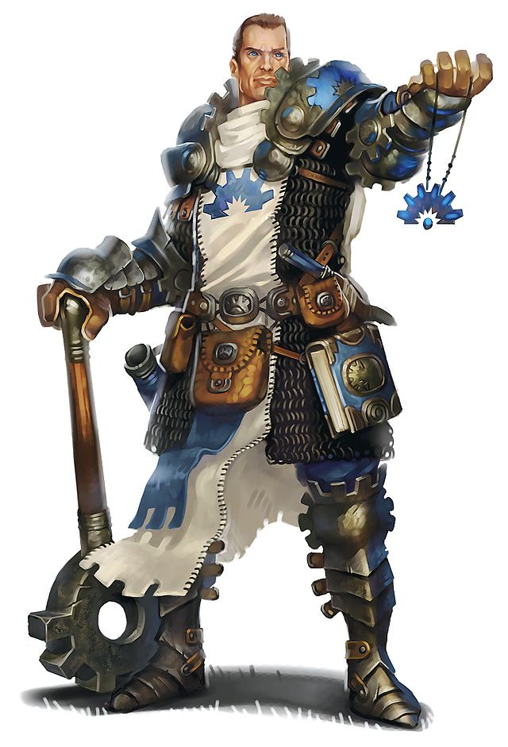
- 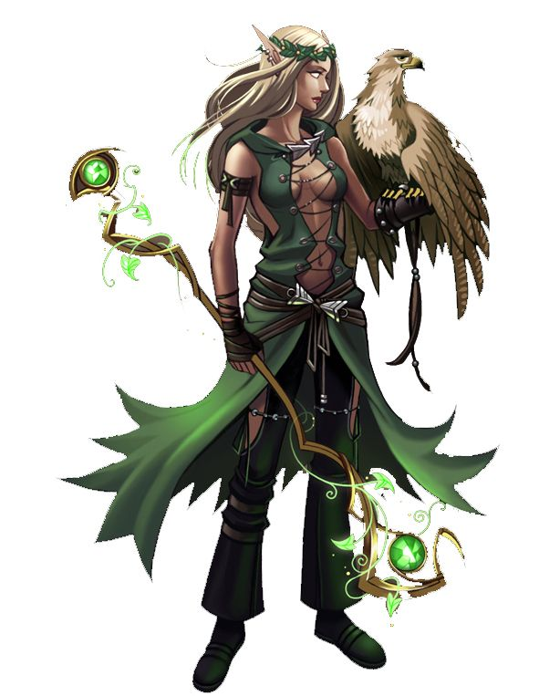
- 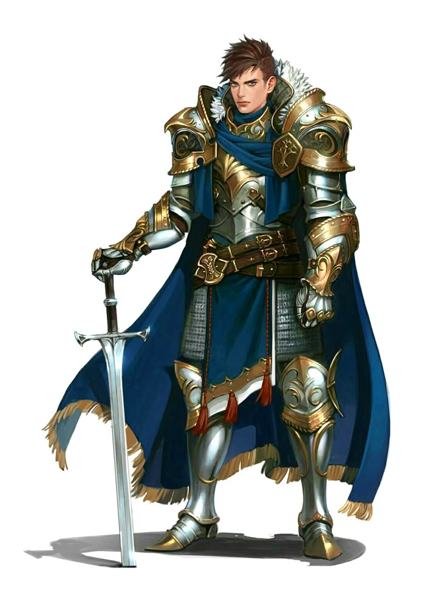
Fighter class
The Fighter class in Dungeons & Dragons 5th Edition is one of the most versatile and beginner-friendly classes in the game. It’s known for its durability, consistent damage output, and straightforward mechanics. Fighters have a d10 Hit Die, making them fairly tanky, and they are proficient with all armor types (light, medium, heavy) and shields, as well as all simple and martial weapons. They make saving throws using Strength and Constitution, and can choose two skills from a list including Athletics, Intimidation, Perception, Survival, History, and Acrobatics, among others. At level 1, they gain a Fighting Style, which gives a passive combat bonus tailored to their build—like +1 AC with armor, rerolling 1s and 2s with heavy weapons, or bonuses when fighting with two weapons. At level 2, they gain Action Surge, allowing them to take an additional action on their turn, which can be used once per short or long rest. At level 5, they gain Extra Attack, allowing them to attack twice when taking the Attack action (up to three times at level 11 and four times at level 20). At level 9, they get Indomitable, which lets them reroll a failed saving throw once per long rest (with more uses at higher levels). At level 3, Fighters choose a Martial Archetype, which determines their combat style and special features. Popular options include the Champion (simple and effective, with improved crits and physical prowess), the Battle Master (tactical combat with maneuvers and superiority dice), and the Eldritch Knight (combining magic and melee). Other archetypes like the Samurai or Echo Knight offer unique playstyles from supplemental books. Overall, Fighters are highly durable, flexible in both melee and ranged combat, and remain effective at all levels of play. They’re ideal for new players due to their simplicity, but offer plenty of depth for experienced players looking to master battlefield control or specialized builds.
Wizard class
The Wizard is the most powerful spellcasting class in Dungeons & Dragons 5th Edition, known for its vast spell list, versatility, and potential for high damage and utility. Wizards use a d6 Hit Die, making them fragile in close combat, but they make up for it with unparalleled magical ability. They are proficient with daggers, darts, slings, quarterstaffs, and light crossbows, and they use Intelligence as their spellcasting ability. Wizards can prepare a number of spells each day equal to their Intelligence modifier + their wizard level, and they learn spells from scrolls and spellbooks rather than having a fixed list like sorcerers or warlocks. At level 1, a wizard starts with a spellbook containing six 1st-level spells and can cast a limited number per day depending on their level. Their Arcane Recovery feature allows them to regain some spell slots once per day during a short rest. At level 2, Wizards choose an Arcane Tradition—a specialization in a school of magic such as Evocation (focused on raw elemental power), Abjuration (defensive and protective spells), Divination (future sight and control over fate), Necromancy (undead manipulation), or other schools like Illusion, Enchantment, Transmutation, Conjuration, or War Magic. Each tradition grants powerful features as the wizard levels up, enhancing their chosen school’s strengths. Wizards are also ritual casters, meaning they can cast certain spells without using a slot if the spell has the ritual tag and is in their spellbook. As they level up, they gain more spell slots, learn more spells, and eventually can cast 9th-level spells—the strongest in the game. At level 18, they gain Spell Mastery, allowing them to cast a 1st-level and 2nd-level spell at will. At level 20, they gain Signature Spells—two 3rd-level spells that they can cast without expending slots once per short or long rest. Wizards require careful planning and strategy but reward players with massive potential for damage, battlefield control, utility, and problem-solving through magic. They are the ultimate toolbox class for players who enjoy thinking creatively and preparing for any situation.
Sorcerer class
The Sorcerer in Dungeons & Dragons 5th Edition is a spontaneous arcane spellcaster whose power comes from innate magical talent rather than study or divine gift. They use a d6 Hit Die, making them fragile like wizards, and rely on Charisma as their spellcasting ability, which influences both their spell DCs and attack rolls. Unlike wizards, sorcerers have a much smaller list of spells known, but they don’t need to prepare spells each day—they can cast any spell they know as long as they have the spell slots available. A key feature of the sorcerer is Sorcery Points, which they gain starting at level 2. These points power Metamagic, a defining ability that lets them modify spells in various ways—like casting silently, extending the range, increasing the duration, splitting the target (Twinned Spell), or making the spell harder to resist (Heightened Spell). Sorcerers gain more Metamagic options and sorcery points as they level up, allowing highly flexible casting styles. At level 1, they choose a Sorcerous Origin, which is the source of their magical power. Popular options include Draconic Bloodline (grants elemental resistances, bonus HP, and later flight), Wild Magic (chaotic and unpredictable, with random magical surges), and Divine Soul (access to cleric spells and healing, mixing arcane and divine magic). Other origins like Shadow Magic or Storm Sorcery offer unique themes and abilities. Sorcerers can cast up to 9th-level spells and get a very limited number of spells known compared to other casters, so every choice matters. At level 20, their Sorcerous Restoration feature gives them back some sorcery points at the end of a short rest. The sorcerer excels in burst damage, creative spell manipulation, and thematic, roleplay-heavy builds. They are ideal for players who enjoy having fewer options each day but more flexibility and power in the moment, especially through Metamagic. Playing a sorcerer is about embracing the raw, untamed nature of magic and bending it to your will with personal flair.
Cleric class
The Cleric is one of the most versatile and powerful spellcasting classes in Dungeons & Dragons 5th Edition, blending divine magic, combat readiness, and strong support capabilities. Clerics use a d8 Hit Die, giving them decent durability, and they are proficient with light and medium armor, shields, and typically simple weapons. Their spellcasting is based on Wisdom, and they are full spellcasters, meaning they can cast spells up to 9th level. Unlike most classes, clerics prepare spells from the entire cleric spell list every day, choosing a number of spells equal to their Wisdom modifier + their cleric level, making them extremely adaptable. A key feature of the cleric is Channel Divinity, gained at level 2, which lets them perform divine actions such as turning undead or using a unique effect based on their Divine Domain. This can be used once per short or long rest, with more uses and effects unlocked as they level. Clerics choose a Divine Domain at level 1, which reflects the god or divine force they serve and grants domain-specific features and extra spells. Domains significantly shape a cleric's role in the party—some popular ones include Life (healing and tanking), War (martial combat and buffs), Light (fire and radiant offense), Trickery (illusion and stealth), and Grave (death-related spells and protection). Other domains from expansions like Twilight or Forge add even more diversity. Clerics can wear armor and hold shields while casting, and many domains offer bonus proficiencies with weapons or heavy armor, allowing for front-line combat builds. Their Turn Undead feature is a classic cleric ability, forcing undead creatures to flee or even be destroyed at higher levels. At level 10, most clerics gain Divine Intervention, which allows them to call upon their deity for a miracle—a powerful, GM-determined effect that can turn the tide of battle or solve major problems (and it automatically succeeds once per week at level 20). Overall, clerics can fill nearly any role: healer, tank, buffer, damage dealer, or controller. They are excellent for players who want a mix of spellcasting and combat, flavored with divine power and strong thematic depth based on their chosen god or ideals.
Druid class
The Druid in Dungeons & Dragons 5th Edition is a versatile and nature-themed spellcaster who can heal, deal damage, control the battlefield, and even transform into animals. Druids use a d8 Hit Die, giving them moderate durability, and they are proficient with light and medium armor (though not made of metal), shields (also non-metal), and simple weapons like clubs, spears, and scimitars. Their spellcasting is based on Wisdom, and they are full casters with access to spells up to 9th level. Druids prepare their spells daily from the entire druid spell list, choosing a number of spells equal to their Wisdom modifier + druid level, making them flexible and adaptive. A defining feature of druids is Wild Shape, gained at level 2, which allows them to transform into beasts they’ve seen. The power of Wild Shape grows with level, starting with basic creatures like wolves or panthers, and eventually allowing flight, swimming, and even elementals (with Circle of the Moon). At level 18, they can use Wild Shape an unlimited number of times. At level 20, they gain Archdruid, which among other benefits lets them ignore verbal, somatic, and material components for druid spells and makes them immune to aging. At level 2, druids also choose a Druid Circle, which deeply shapes their playstyle. Circle of the Land enhances spellcasting and gives bonus spells based on terrain, focusing on sustained magic use. Circle of the Moon focuses on powerful Wild Shapes and combat forms, turning the druid into a front-line fighter. Other circles from supplements include Circle of the Shepherd (support and spirit summoning), Spores (necrotic damage and symbiotic powers), and Stars (healing and cosmic versatility). Druids also gain unique spells like Entangle, Flame Blade, Call Lightning, and Conjure Animals, with many options to control the battlefield, summon allies, or shape nature to their will. Additionally, druids have access to ritual casting and their own Druidic secret language. They are ideal for players who enjoy shapeshifting, nature magic, and flexible spellcasting that can fill many party roles—from healer to controller to tank.
Paladin class
class
- Fighter?
- Fighters share an unparalleled mastery with weapons and armor, and a thorough knowledge of the skills of combat. They are well acquainted with death, both meting it out and staring it defiantly in the face..
- Wizard
- Wizards are supreme magic-users, defined and united as a class by the spells they cast. Drawing on the subtle weave of magic that permeates the cosmos, wizards cast spells of explosive fire, arcing lightning, subtle deception, brute-force mind control, and much more.
- Sorcerer
- orcerers carry a magical birthright conferred upon them by an exotic bloodline, some otherworldly influence, or exposure to unknown cosmic forces. No one chooses sorcery; the power chooses the sorcerer.
- D&D World
- “ Someone should have dared, long ago, and done so as often as it took to break you of this serenely wrong view of the ways of the world. Hear this, Narantha, and hear it well: Faerûn is not going to change to your will. Either you must change to dwell in it, or it will break you."


- 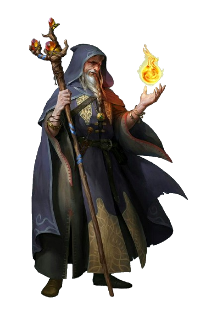
- 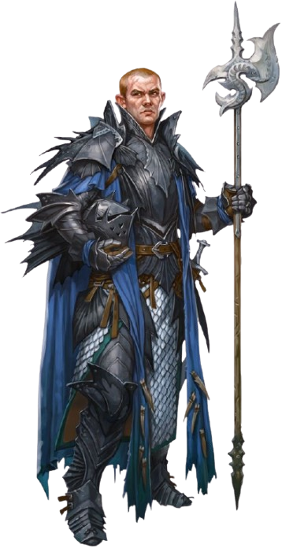
- 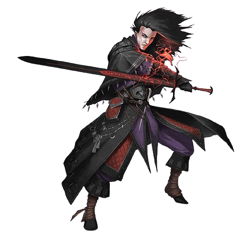
- 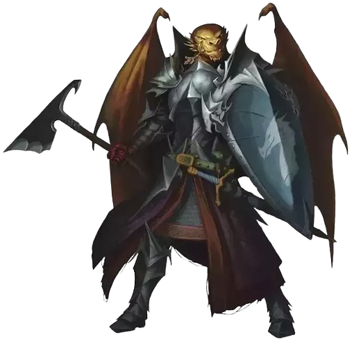
- 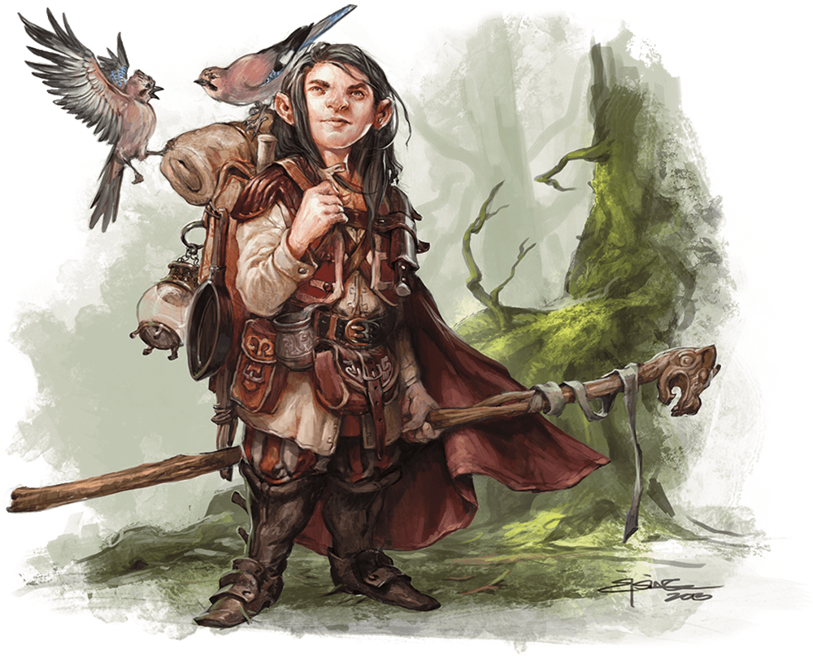

get in touch

- contato@gmail.com
- +55 (21) 9999-9999
- Rua do Conde, nº 21
- Rio de Janeiro - RJ
- 0 donate bitcoin to help us
- Monday to Friday from 8 am to 6 pm